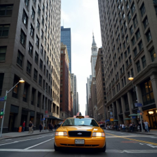
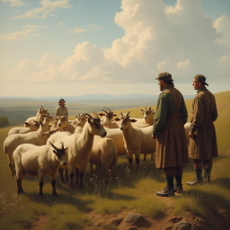

At each step, we check stability conditions from the ODE solver to decide whether to reuse cached outputs or perform fresh model evaluation. This enables adaptive acceleration with minimal overhead and strong compatibility with existing solvers like DPM++ and EDM.
Evaluations
Images
Measured total latency of PAB for different models for generating a single video on 8 NVIDIA H100 GPUs. When utilizing a single GPU, we achieve a speedup ranging from 1.26x to 1.32x, which remains stable across different schedulers. Scaling to multiple GPUs, our method achieves a speedup of up to 10.6x, which almost linearly scales with the number of GPUs due to our efficient improvement of sequence parallel.
Original (1.0x)
Balanced (1.92x)

Medium (2.25x)
Fast (2.91x)


Turbo (3.64x)
Videos

Audios
Quantitive Results